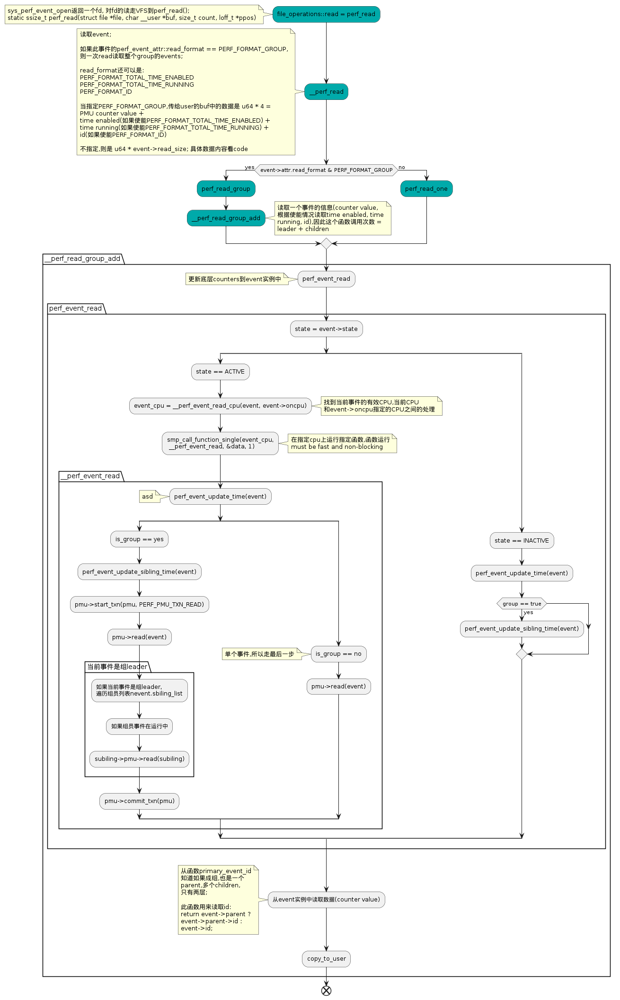

用户层对采集类型的处理,以及采集内容都可以是啥
Table of Contents
1. 从用户层请求发起的请求中perf_event_attr::sample_type指明要采样的值
/* * Bits that can be set in attr.sample_type to request information * in the overflow packets. */ enum perf_event_sample_format { PERF_SAMPLE_IP = 1U << 0, PERF_SAMPLE_TID = 1U << 1, PERF_SAMPLE_TIME = 1U << 2, PERF_SAMPLE_ADDR = 1U << 3, PERF_SAMPLE_READ = 1U << 4, PERF_SAMPLE_CALLCHAIN = 1U << 5, PERF_SAMPLE_ID = 1U << 6, PERF_SAMPLE_CPU = 1U << 7, PERF_SAMPLE_PERIOD = 1U << 8, PERF_SAMPLE_STREAM_ID = 1U << 9, PERF_SAMPLE_RAW = 1U << 10, PERF_SAMPLE_BRANCH_STACK = 1U << 11, PERF_SAMPLE_REGS_USER = 1U << 12, PERF_SAMPLE_STACK_USER = 1U << 13, PERF_SAMPLE_WEIGHT = 1U << 14, PERF_SAMPLE_DATA_SRC = 1U << 15, PERF_SAMPLE_IDENTIFIER = 1U << 16, PERF_SAMPLE_TRANSACTION = 1U << 17, PERF_SAMPLE_REGS_INTR = 1U << 18, PERF_SAMPLE_PHYS_ADDR = 1U << 19, PERF_SAMPLE_AUX = 1U << 20, PERF_SAMPLE_CGROUP = 1U << 21, PERF_SAMPLE_MAX = 1U << 22, /* non-ABI */ __PERF_SAMPLE_CALLCHAIN_EARLY = 1ULL << 63, /* non-ABI; internal use */ }; // 使用实例 attr.sample_type |= PERF_SAMPLE_BRANCH_STACK; enum perf_branch_sample_type { PERF_SAMPLE_BRANCH_USER = 1U << PERF_SAMPLE_BRANCH_USER_SHIFT, PERF_SAMPLE_BRANCH_KERNEL = 1U << PERF_SAMPLE_BRANCH_KERNEL_SHIFT, PERF_SAMPLE_BRANCH_HV = 1U << PERF_SAMPLE_BRANCH_HV_SHIFT, PERF_SAMPLE_BRANCH_ANY = 1U << PERF_SAMPLE_BRANCH_ANY_SHIFT, PERF_SAMPLE_BRANCH_ANY_CALL = 1U << PERF_SAMPLE_BRANCH_ANY_CALL_SHIFT, PERF_SAMPLE_BRANCH_ANY_RETURN = 1U << PERF_SAMPLE_BRANCH_ANY_RETURN_SHIFT, PERF_SAMPLE_BRANCH_IND_CALL = 1U << PERF_SAMPLE_BRANCH_IND_CALL_SHIFT, PERF_SAMPLE_BRANCH_ABORT_TX = 1U << PERF_SAMPLE_BRANCH_ABORT_TX_SHIFT, PERF_SAMPLE_BRANCH_IN_TX = 1U << PERF_SAMPLE_BRANCH_IN_TX_SHIFT, PERF_SAMPLE_BRANCH_NO_TX = 1U << PERF_SAMPLE_BRANCH_NO_TX_SHIFT, PERF_SAMPLE_BRANCH_COND = 1U << PERF_SAMPLE_BRANCH_COND_SHIFT, PERF_SAMPLE_BRANCH_CALL_STACK = 1U << PERF_SAMPLE_BRANCH_CALL_STACK_SHIFT, PERF_SAMPLE_BRANCH_IND_JUMP = 1U << PERF_SAMPLE_BRANCH_IND_JUMP_SHIFT, PERF_SAMPLE_BRANCH_CALL = 1U << PERF_SAMPLE_BRANCH_CALL_SHIFT, PERF_SAMPLE_BRANCH_NO_FLAGS = 1U << PERF_SAMPLE_BRANCH_NO_FLAGS_SHIFT, PERF_SAMPLE_BRANCH_NO_CYCLES = 1U << PERF_SAMPLE_BRANCH_NO_CYCLES_SHIFT, PERF_SAMPLE_BRANCH_TYPE_SAVE = 1U << PERF_SAMPLE_BRANCH_TYPE_SAVE_SHIFT, PERF_SAMPLE_BRANCH_HW_INDEX = 1U << PERF_SAMPLE_BRANCH_HW_INDEX_SHIFT, PERF_SAMPLE_BRANCH_MAX = 1U << PERF_SAMPLE_BRANCH_MAX_SHIFT, };
- 所指明的对象将会被记录到ring-buffer中供perf工具使用;
- 采样值在MMAP布局中记录的顺序是man手册中会说的顺序,而非上面枚举顺序;
- 针对enum perf_event_sample_format::PERF_SAMPLE_BRANCH_STACK, enum perf_branch_sample_type给出了更细的划分,由perf_event_attr::branch_sample_type传递;
2. perf_event_open 对attr::sample_type的处理
- 在static int perf_copy_attr(struct perf_event_attr __user *uattr, struct perf_event_attr *attr)中会对attr::sample_type进行部分功能和权限过滤;
3. P8中对branch stack的整理
/** * 分支栈布局 branch stack layout: * nr: entries中的raw branch 个数 * hw_idx: 最近记录在entries中的raw branch records索引,-1 意思是无效或未知 * * 从nr -> nr-1 -> nr-2 -...-> 0 就是代码path,entries[0]包含最近的分支 * entries[] 是raw branch records的抽象,可以不按照age顺序,例如Intel LBR; * hw_idx用来导出 the low level index of raw branch record for the most recent branch; * hw_idx位于-1到max depth之间,可以通过/sys/devices/cpu/caps/branches看到; * raw branch records按照age顺序存储的架构,hw_idx应该是0; */ struct perf_branch_stack { __u64 nr; __u64 hw_idx; struct perf_branch_entry entries[]; }; struct perf_sample_data { ...; struct perf_branch_stack *br_stack; ...; }
powerpc CPU PMU中对br_stack唯一的处理:
/** * 一个counter溢出,将其值更新到事件实例中,并根据需要记录内容 */ static void record_and_restart(struct perf_event *event, unsigned long val, struct pt_regs *regs) { ...; if (event->attr.sample_type & PERF_SAMPLE_BRANCH_STACK) { struct cpu_hw_events *cpuhw; cpuhw = this_cpu_ptr(&cpu_hw_events); power_pmu_bhrb_read(event, cpuhw); data.br_stack = &cpuhw->bhrb_stack; } ...; }
- br_stack对应PowerPC架构中的BHRB;
4. 从底层拿到值后,传给ring-buffer
void perf_output_sample(struct perf_output_handle *handle, struct perf_event_header *header, struct perf_sample_data *data, struct perf_event *event) { ...; if (((sample_type & PERF_SAMPLE_BRANCH_STACK)) && data->br_stack) { size_t size; size = data->br_stack->nr * sizeof(struct perf_branch_entry); perf_output_put(handle, data->br_stack->nr); if (perf_sample_save_hw_index(event)) perf_output_put(handle, data->br_stack->hw_idx); perf_output_copy(handle, data->br_stack->entries, size); } ...; }
5. 流程图(含有部分问题未修改,仍以源代码为主)
- 无论是一组事件还是单个事件,导出user的只有一个fd;
- 调用各个事件的pmu->read(),把数据读到事件实例中;
- 将事件实例中的内容(running time, enabled time, id, counter value)放进buffer,通过fd read操作,读出
指定PERF_FORMAT_GROUP:
/** * nr, 此文件描述符中的事件个数; * time_enabled, time_running, 事件使能及运行的总时间; 正常情况下两值相等. * 当PMU counters个数小于事件个数时,会进行Multiplex放大; 这种情况下, 运行 * 时间只是使能时间的一部分,运行时间值可以用来进行估计; * value, 包含counter结果,在user看来,是无论多少events,底层就有多少 * counters可以支持; * id, event的全局唯一值,只在PERF_FORMAT_ID指定时才有; */ struct read_format { u64 nr; /* The number of events */ u64 time_enabled; /* if PERF_FORMAT_TOTAL_TIME_ENABLED */ u64 time_running; /* if PERF_FORMAT_TOTAL_TIME_RUNNING */ struct { u64 value; /* The value of the event */ u64 id; /* if PERF_FORMAT_ID */ } values[nr]; };
不指定PERF_FORMAT_GROUP:
struct read_format { u64 value; /* The value of the event */ u64 time_enabled; /* if PERF_FORMAT_TOTAL_TIME_ENABLED */ u64 time_running; /* if PERF_FORMAT_TOTAL_TIME_RUNNING */ u64 id; /* if PERF_FORMAT_ID */ };
流程图有部分问题
